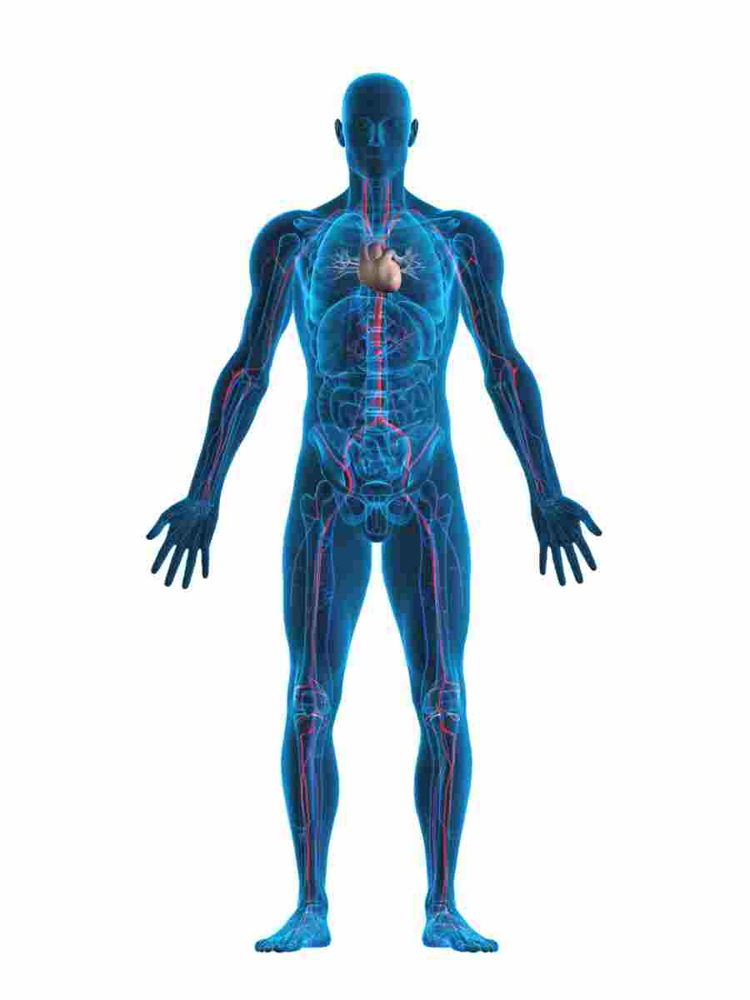

Dietabit - Dieta e salute
2021.04.17 14:06
Menu Alimenti Dieta Salute Alimentazione Corsa Sport Chi siamo
Dieta e salute
Dietabit è il sito di informazione scientifica per approfondire la relazione tra alimentazione, stile di vita e salute. Una dieta sana ed equilibrata, insieme ad uno stile di vita corretto, costituiscono la base di partenza per vivere al meglio la propria vita.
Se hai voglia di imparare qualcosa e hai intenzione di metterci un minimo di impegno , se non sei alla ricerca di scorciatoie, di diete veloci o di pillole miracolose per dimagrire senza fatica... allora Dietabit è il sito che fa per te, buona lettura!
Analisi del sangue: ad ogni organo i suoi controlli!
28 aprile 2015
Ogni organo del corpo umano ha una funzione specifica al fine di garantirci un’ottimale qualità della vita. È per questo che ogni anno sarebbe opportuno controllarne il funzionamento per poter intervenire tempestivamente nella cura di un’eventuale disfunzione. Ecco i principali organi e gli esami del sangue di base per ognuno di essi.
Leggi tutto l'articolo...Caffeina
9 aprile 2015
Dopo l’acqua, le bevande a base di caffeina sono senza dubbio tra le più comsumate al mondo.
Le modalità di assunzione di questa sostanza psicostimolante sono molteplici: in Occidente questo avviene soprattutto con il consumo di caffè e bevande a base di cola, mentre in alcuni paesi come l’Africa la caffeina è assunta soprattutto mediante il consumo di noce di cola e tè.
Leggi tutto l'articolo...Elettroforesi delle sieroproteine
3 aprile 2015
Cerchiamo di fare un po’ di chiarezza per capire l’importanza dell’elettroforesi sierica e per interpretarla al meglio, distinguendo un esame normale da uno che evidenzia patologie di vario tipo.
Leggi tutto l'articolo...La forza e il suo utilizzo in atletica
30 marzo 2015
Per correre veloci occorre forza? La risposta appare semplice ed affermativa, ma il dibattito fra tecnici, circa la reale importanza, rimane un tema sempre aperto
Leggi tutto l'articolo...Muffe nei cereali e pericolo di intossicazione
23 marzo 2015
Ormai da decenni è nota la crescita di muffe negli alimenti e la produzione da parte di queste di tossine, conosciute anche come micotossine. Queste tossine hanno causato grandi epidemie sia nell'uomo che negli animali nel passato. Scopriamo quali sono
Leggi tutto l'articolo...Allergia e intossicazione da pesce: due diverse realtà
23 marzo 2015
Malessere, nausea, cefalea, disturbi intestinali dopo aver mangiato piatti a base di pesce: allergia o intossicazione? Differenziare le due situazioni non sempre è così facile, cerchiamo di capirne qualcosa di più…
Leggi tutto l'articolo...Probiotici: panacea di tutti i mali?
26 maggio 2014
I probiotici si nominano continuamente, ogni giorno le pubblicità sponsorizzano prodotti contenenti i più disparati probiotici che promettono difesa dalle infezioni, rafforzamento del sistema immunitario o regolarità intestinale. Ma cosa sono queste miracolose entità, soluzione per tutti i mali? Cosa ne pensa la comunità scientifica?
Leggi tutto l'articolo...I pericoli del pesce crudo
25 marzo 2014
Le infezioni correlate all'ingestione di pesce sono molto comuni. Sia i governi che i venditori di pesce hanno la responsabilità di assicurare un prodotto sicuro al consumatore ma il consumatore dovrebbe, a sua volta, adottare precauzioni di buon senso per ridurre il rischio di infezione.
Leggi tutto l'articolo... Copyright © 2006 - 2014 Dietabit.it - All Rights Reserved - P.IVA 01550250086